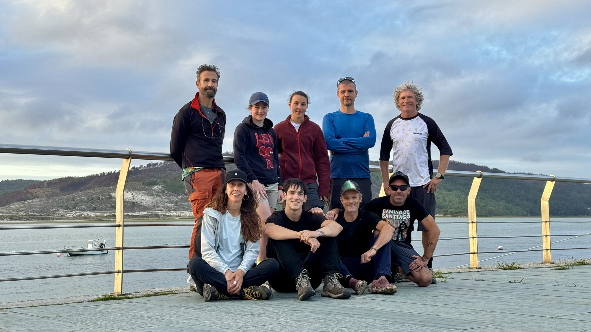

Costa da Morte es uno de los lugares más mágicos de Galicia, lleno de acantilados, playas salvajes y rutas perfectas para el turismo activo. En esta salida combinamos kayak, senderismo, orientación y visitas culturales, todo en un mismo fin de semana.
La ruta
Comenzamos en la playa de Laxe con una travesía en kayak, continuamos con un trekking por los acantilados y cerramos con una actividad de orientación al atardecer. Una experiencia inolvidable.
¿Por qué elegir esta aventura?
- Guías titulados en cada actividad.
- Pack completo con alojamiento y seguro.
- Grupos reducidos para una experiencia más cercana.